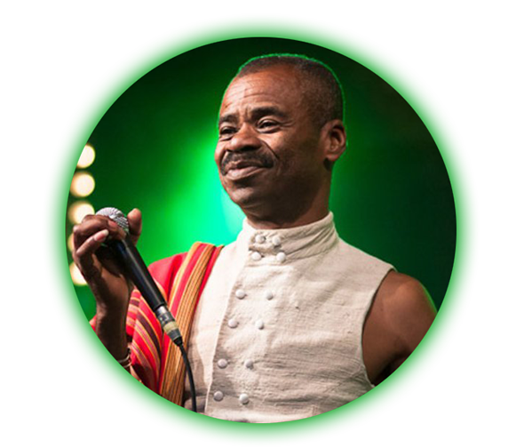

Chanteur - Compositeur
Jaojoby, de son vrai nom Eusèbe Jaojoby, né en 1955, est un musicien et chanteur malgache surnommé le "roi du
salegy", un genre musical traditionnel du Nord de Madagascar qu'il a popularisé mondialement. Il a
commencé sa carrière dans les années 1970 en jouant d'abord du ba-gasy avant d'incorporer des éléments de salegy dans sa
musique, créant ainsi son propre style unique.
Le salegy est un genre musical populaire à Madagascar, caractérisé par des rythmes rapides, entraînants et
accompagné par des percussions énergiques, ainsi que par des paroles souvent humoristiques ou sociales.
Son premier album "Samy Mandeha Samy Mitady" qui signifie "Que chacun travail pour gagner",
sorti en 1983, a connu un énorme succès dans son pays. Jaojoby est devenu au fil des années une figure
emblématique de la musique malgache et a participé à de nombreux festivals de musique à travers le monde.
Jaojoby a sorti de nombreux albums au cours de sa carrière, explorant différents styles de musique tout en
restant fidèle à ses racines malgaches. Il a également travaillé avec des artistes internationaux tels que Manu Dibango et Toumani Diabaté.
En 1991, Jaojoby a gagné le prix RFI Découvertes, une compétition musicale
internationale qui célèbre les nouveaux talents à travers le monde. Cette distinction a renforcé sa notoriété à
l'échelle mondiale, l'amenant à se produire dans des festivals de musique et des salles de concert en Afrique et
en Europe.
En dehors de sa carrière musicale, Jaojoby est reconnu aux niveaux sociales et environnementales à
Madagascar. Il a été désigné ambassadeur de bonne volonté de l'UNICEF à Madagascar et a créé une organisation
pour encourager la reforestation et la protection de la nature dans son pays d'origine.
Il est aussi connu pour son engagement dans la promotion de la musique et de la culture malgaches et en
2005, il a fondé l’Académie de musique malgache, une école qui offre une formation en musique traditionnelle
malgache aux jeunes musiciens. L’école est située dans la ville de Morondava, dans l’ouest de Madagascar.

œuvre 1: " Alima " - en 1996 (Spotify)
œuvre 2: " Tsy akeo " - en 1997 (Spotify)